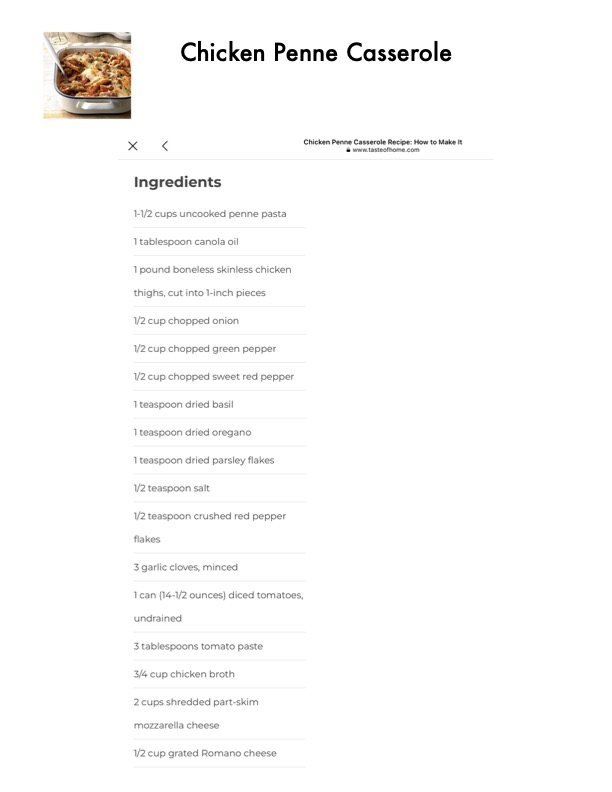

Chicken Penne Casserole

Original cookbook page 406
Ingredients
- 1-1/2 cups uncooked penne pasta
- 1 tablespoon canola oil
- 1 pound boneless skinless chicken
- thighs, cut into 1-inch pieces
- 1/2 cup chopped onion
- 1/2 cup chopped green pepper
- 1/2 cup chopped sweet red pepper
- 1 teaspoon dried basil
- 1 teaspoon dried oregano
- 1 teaspoon dried parsley flakes
- 1/2 teaspoon salt
- 1/2 teaspoon crushed red pepper
- flakes
- 3 garlic cloves, minced
- 1can (14-1/2 ounces) diced tomatoes,
- undrained
- 3 tablespoons tomato paste
- 3/4 cup chicken broth
- 2 cups shredded part-skim
- mozzarella cheese
- 1/2 cup grated Romano cheese
Instructions
- 1-1/2 cups uncooked penne pasta 1 tablespoon canola oil
- 1/2 cup chopped sweet red pepper 1 teaspoon dried basil
- undrained 3 tablespoons tomato paste 3/4 cup chicken broth
Recipe #406 from collection